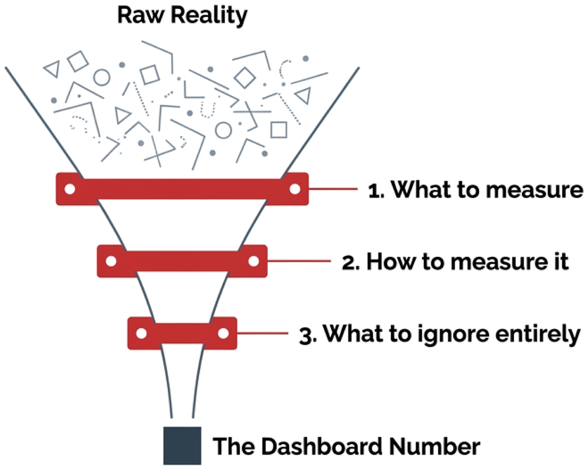

You drive over a suspension bridge without wading into the water to check that the pylons reach bedrock. Infrastructure hands you a binary sense of security — it holds, or it doesn't. Economic data has no such bedrock. Its beams are best guesses, and some are missing entirely.

Every number you meet is what survives three subjective decisions:
1
What to measure. Which concept counts as “unemployed”?
2
How to measure it. Phone survey, admin record, scraped price?
3
What to ignore entirely. Who never got counted at all?
Decision 3 leaves no trace. Nothing in the file tells you what was thrown away before it was written — which is why treating the result as solid steel is the dangerous move.